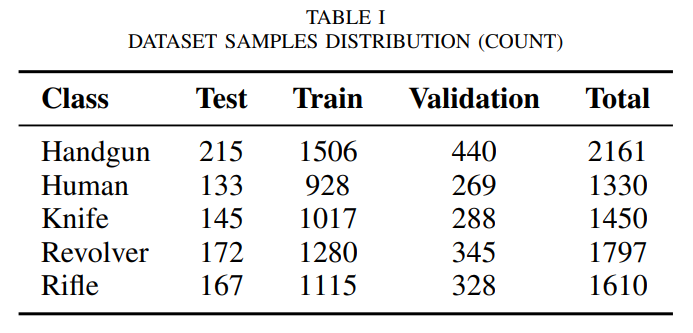
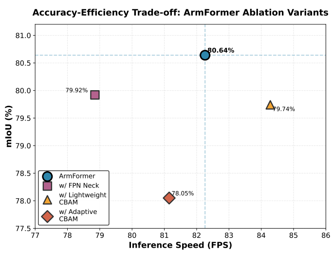
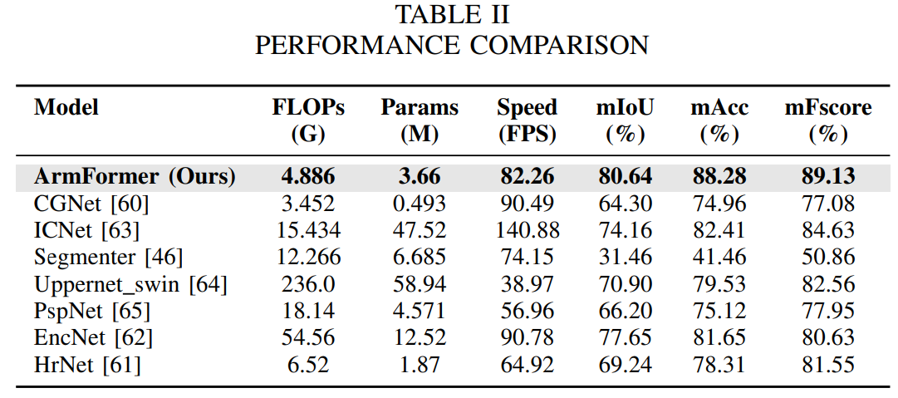
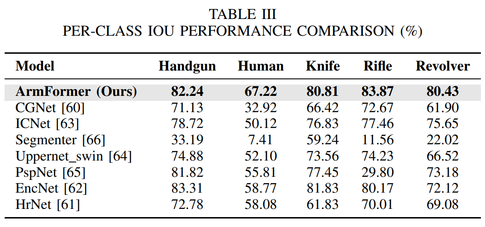
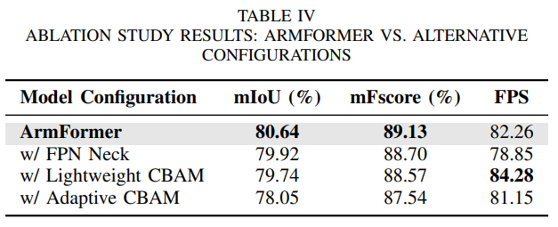
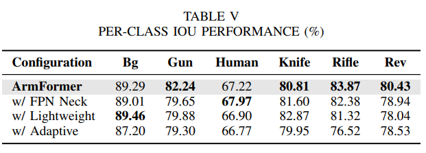

Highlights
Weapon detection in surveillance systems is critical for public safety and security applications. We introduce ArmFormer, a lightweight transformer-based semantic segmentation framework designed for real-time multi-class weapon detection in both thermal and RGB imagery. The architecture integrates Convolutional Block Attention Module (CBAM) with Mix Vision Transformer (MViT) and Light Harmonic Aggregation Module (LightHAM) to achieve superior detection performance while maintaining computational efficiency for deployment on resource-constrained edge devices.
Key Achievements:
- Advanced Architecture: CBAM-enhanced MViT backbone with LightHAM decoder for efficient multi-scale feature fusion
- Multi-Class Detection: Simultaneous detection of handguns, rifles, revolvers, knives, and human subjects
- Real-time Performance: Optimized for edge device deployment with efficient computational requirements
- Dual-Modal Support: Works seamlessly with both thermal and RGB imaging modalities
- Attention Mechanisms: Strategic CBAM integration at multiple architecture levels for enhanced feature representation
- Resource Efficient: Lightweight design suitable for surveillance cameras and mobile platforms
Architecture Overview
ArmFormer Architecture: A sophisticated semantic segmentation framework combining CBAM-enhanced Mix Vision Transformer backbone with Light Harmonic Aggregation Module decoder. The architecture employs hierarchical feature extraction through four transformer stages with overlap patch merging, each enhanced by CBAM attention modules for improved channel and spatial feature representation. The LightHAM decoder efficiently aggregates multi-scale features with integrated CBAM attention mechanisms, enabling accurate weapon segmentation while maintaining computational efficiency suitable for edge device deployment.
Motivation & Security Impact
Public safety and security remain paramount concerns in modern society, with weapon detection being a critical component of intelligent surveillance systems. Traditional weapon detection methods rely on manual monitoring or computationally expensive deep learning models that are impractical for real-time deployment on edge devices. The integration of thermal and RGB imaging provides robust detection capabilities across varying lighting conditions and environmental scenarios.
Key Challenges Addressed:
- Real-time Processing: Need for fast, accurate weapon detection in live surveillance feeds
- Multi-Class Recognition: Simultaneous detection of diverse weapon types (handguns, rifles, knives) and humans
- Edge Device Constraints: Deployment on resource-limited surveillance cameras and mobile platforms
- Lighting Variations: Robust performance across different illumination conditions using thermal/RGB fusion
- Feature Representation: Effective extraction of discriminative features for accurate weapon identification
- Computational Efficiency: Balancing detection accuracy with minimal processing overhead
Innovation: ArmFormer addresses these challenges through a carefully designed architecture that integrates attention mechanisms at strategic points, enabling the model to focus on relevant features while maintaining computational efficiency. The combination of transformer-based hierarchical feature extraction and lightweight decoder design makes it particularly suitable for deployment in real-world security and surveillance applications.
Dataset & Experimental Setup
Thermal-RGB Weapon Detection Dataset
Figure: Thermal-RGB Weapon Dataset Overview. The dataset contains synchronized thermal and RGB imagery with multi-class annotations for weapon detection. Classes include: Background, Handgun, Human, Knife, Rifle, and Revolver. The dataset provides comprehensive coverage of various weapon types across different scenarios, enabling robust model training and evaluation for real-world security applications. Images are captured at 512×512 resolution with precise pixel-level annotations.
Architecture Components
CBAM-Enhanced MViT Backbone:
- Hierarchical Structure: Four-stage transformer encoder with progressive feature extraction
- Attention Integration: CBAM modules after each transformer stage for enhanced feature refinement
- Overlap Patch Merging: Maintains spatial continuity during downsampling
- Multi-Scale Features: Progressive embedding dimensions [32, 64, 160, 256]
- Channel & Spatial Attention: Dual attention mechanisms for comprehensive feature enhancement
CBAM-Enhanced LightHAM Decoder:
- Efficient Aggregation: Light Harmonic Aggregation Module for multi-scale feature fusion
- Strategic CBAM Placement: Pre-HAM attention integration for feature refinement
- Reduced Complexity: Lightweight design suitable for edge deployment
- Feature Fusion: Seamless integration of hierarchical backbone features
- Multi-Class Output: Six-class segmentation (5 weapon classes + background)
Experimental Results & Analysis
Qualitative Results

Figure: Qualitative Segmentation Results. Visual comparison demonstrating ArmFormer's segmentation performance across different weapon classes. The model shows accurate boundary delineation and precise classification for handguns, rifles, knives, and human subjects in both thermal and RGB imagery. The attention mechanisms enable effective feature extraction even in challenging scenarios with complex backgrounds and varying object scales.
Comparative Analysis
Figure: Comparative Performance Analysis. Benchmark comparison of ArmFormer against state-of-the-art semantic segmentation models. ArmFormer achieves competitive performance while maintaining lower computational requirements, making it particularly suitable for edge device deployment in security surveillance systems.
Quantitative Results
Performance Metrics
Table: Detailed Performance Metrics. Comprehensive quantitative evaluation showing class-wise performance metrics including IoU, accuracy, precision, recall, and F1-score for each weapon class and overall model performance.
Ablation Studies
Table: Ablation Study Results. Systematic evaluation of ArmFormer components demonstrating the contribution of CBAM attention modules at different architecture locations and the impact of various design choices on overall performance.
Computational Efficiency
Table: Computational Efficiency Analysis. Comparison of model parameters, FLOPs, inference time, and performance metrics across different architectures, highlighting ArmFormer's efficiency-performance trade-off for edge deployment.
Comparison with State-of-the-Art
Table: Comparison with State-of-the-Art Methods. Comprehensive benchmark against leading semantic segmentation architectures showing ArmFormer's competitive performance while maintaining resource efficiency.
Key Contributions & Impact
Technical Innovations:
- Hybrid Architecture: Novel integration of CBAM attention with MViT backbone and LightHAM decoder
- Strategic Attention: Multi-level CBAM placement for comprehensive feature enhancement
- Multi-Class Framework: Efficient simultaneous detection of multiple weapon types and humans
- Dual-Modal Processing: Seamless handling of thermal and RGB imagery
- Lightweight Design: Optimized architecture for edge device deployment
- Feature Aggregation: Efficient multi-scale feature fusion through LightHAM decoder
Practical Applications:
- Security Surveillance: Real-time weapon detection in public spaces and critical infrastructure
- Edge Deployment: Suitable for surveillance cameras and resource-constrained devices
- Law Enforcement: Automated threat detection for rapid response systems
- Smart Cities: Integration with urban security and monitoring networks
- Access Control: Enhanced security screening in airports and sensitive facilities
- Mobile Platforms: Deployment on mobile robots and autonomous security systems
Research Significance
ArmFormer advances the field of automated weapon detection by providing an efficient, accurate, and deployable solution for real-time security applications. By strategically integrating attention mechanisms with transformer-based architectures and lightweight decoders, the model achieves competitive performance while maintaining computational efficiency suitable for edge devices. This research enables widespread deployment of intelligent surveillance systems, contributing to enhanced public safety and security infrastructure. The multi-class detection capability and dual-modal support make ArmFormer particularly versatile for diverse security scenarios across varying environmental conditions.